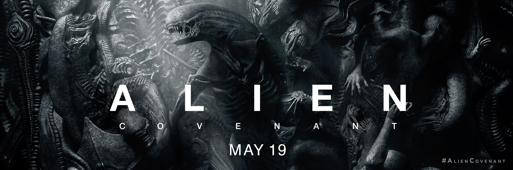

4.에일리언:커버넌트(Alien: Covenant, 2017)
줄거리
역사상 최대규모의 식민지 개척의무를 가지고 목적지로 향하던 ‘커버넌트’ 호는 미지의 행성으로부터 온 신호를 감지하고 그곳을 탐사하기로 결정한다
희망을 가진 신세계일 것이라는 생각과 달리 그곳은 갈수록 어둡고 위험한 세계였다. 상상을 초월하는 위협이 밝혀지며 그들은 목숨을 건 최후의 탈출을 시도해야만 하는데……

Please enable JavaScript to view the
comments powered by Disqus.